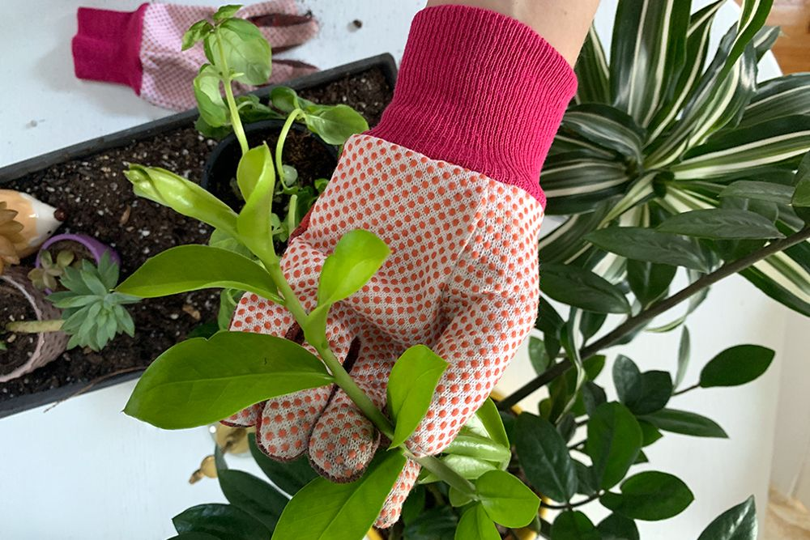

“Spring is sprung, the grass is riz,” as the old Jimmy Durante quote goes. Whether your little patch of paradise is a sprawling suburban yard or a small windowsill, or whether you gear up for greenery every season or are just now taking your first plunge with a gardening kit, you probably can't wait to put winter behind you and get your hands dirty.
Well, we mean getting your hands dirty strictly in the metaphorical sense, because the truth is, gardening gloves are a crucial tool for any green thumb to have on hand. Sure, there's the temptation to go bare hands as you cultivate the land, but gardening gloves can do more than just keep your fingernails clean. A reliable pair can prevent injury from thorns or errant branches, provide cushioned protection during intense landscaping, and even guard against blades and other sharp objects.
So, whether you're shopping for yourself, your kids, or your green-thumbed friend, a reliable pair of gardening gloves is a must have.
While it's easy to think that any glove will do, there are actually a number of factors to take into consideration when choosing the best gloves for your task at hand. We checked in with Clive Harris, founder of DIY Garden — one of the top gardening blogs in the UK — who shared some key things to consider when it comes to gardening gloves:
“Garden tasks vary enormously, and having the right gloves for the job makes them safer and easier,” says Davis. “For example, if you want to prune roses or thorny bushes, choose leather and gauntlet-style arm protection. Lightweight gloves with rubber palms are excellent for a safe grip on lawnmowers or shears, and knuckle protection helps keep your hands safe during landscaping jobs.”
“Lots of gardening gloves are green, but it's a much better idea to buy a bright, contrasting color so you can see where your fingers are when you're using tools, or simply find them again if you leave them on the grass,” says Davis. If your gloves must be green, make sure the palms are contrasting colors!
“If possible, try on gardening gloves before you buy,” says Davis. “This is not only to find the best — and therefore safest — fit, but to observe the quality. Poor stitching creates bunching in the fingertips, and this makes your nails and fingertips ache.”